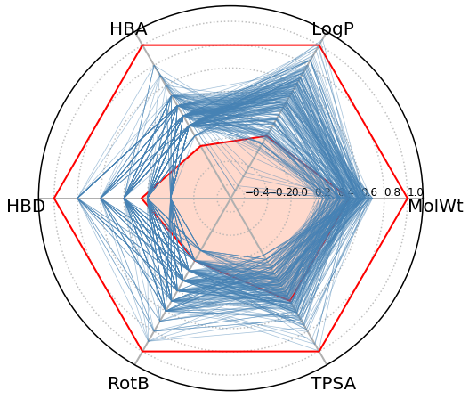
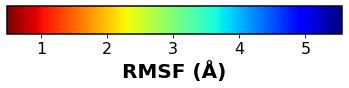
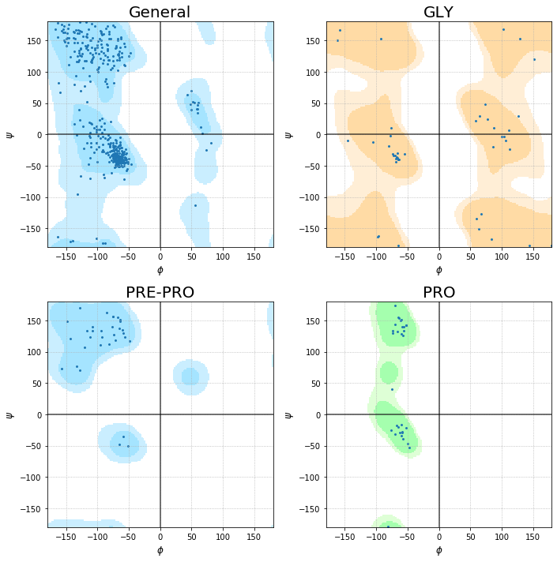

Navigation
index
next
|
Chem-Workflows documentation
»
Tutorials
Tutorials
¶

Exploration of the chemical space using RDKIT and cheminformatics

Brief introduction to Molecular Dynamics analysis with MDanalysis
Similarity analysis of compound databases
Exploring the chemical space by Principal Component Analysis (PCA) and clustering
Pose clustering of docking results
Mini-Tools
¶
Building a Multi-Molecule Mol2 reader for RDKit V2

Ramachandran plot (gerdos/PyRAMA engine)
Retrieve Uniprot data using python
Jupyter Dock
¶
Molecular docking
Virtual Screening
Forum
¶
Table of Contents
Tutorials
Mini-Tools
Jupyter Dock
Forum
Next topic
Exploration of the chemical space using RDKIT and cheminformatics
This Page
Show Source
Quick search
Navigation
index
next
|
Chem-Workflows documentation
»
Tutorials